通过立体图形的展开图，孩子可以更好地认识立体图形的基本特征。本讲的图形展开图可以让孩子体会平面图形和立体图形的转换关系，增强孩子对立体图形特征的理解能力。在解决问题时，对于5～7岁的孩子来说，家长可以让孩子把展开图剪下来，实际拼一拼立体图形，这样既增强他们的动手能力，又培养他们的空间想象能力，然后看看孩子能不能凭借空间想象力解决此类问题。
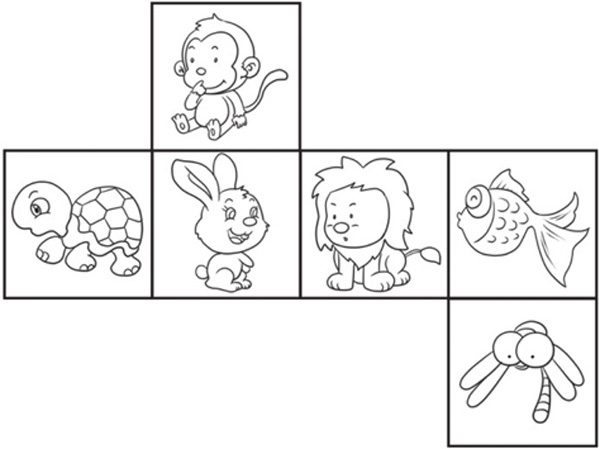
典型例题 1 下图中的6个平面图形中，有圆柱、圆锥、三棱柱（它的底面是三边相等的三角形）的表面展开图，请你把几何体与它对应的表面展开图用线连起来。
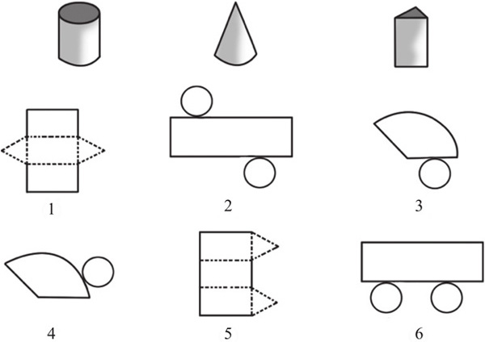
本题考查的是基本立方体的展开和立方体与平面图形的关系。对于这样的题目，建议家长把展开图裁剪下来，让孩子实际动手找出答案，从而培养孩子的空间想象能力和动手能力。
对应的展开图是2，
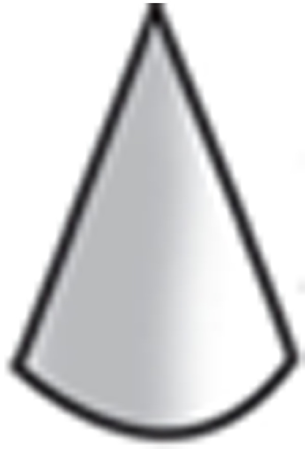
对应的展开图是4， 对应的展开图是1。典型例题 2 下面是一个立方体的展开图，如果把展开图折成立方体后，菠萝在上面，那么什么水果在下面呢？
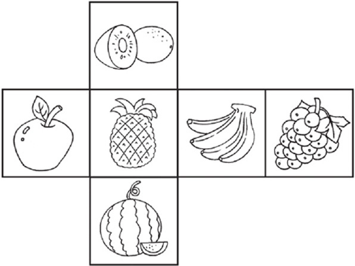
在展开图中，西瓜、香蕉、猕猴桃和苹果都是和菠萝相邻的，恢复成立方体后，它们也是和菠萝相邻的，所以如果菠萝在上面，那么葡萄就在下面。
典型例题 3 下面的4个图形中哪个是右边正方体纸盒的展开图？
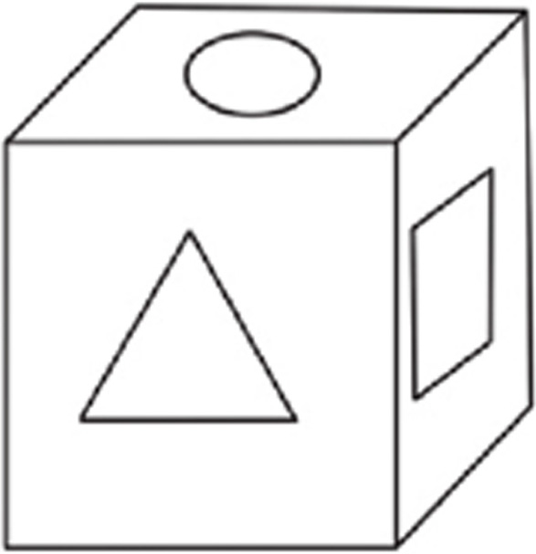
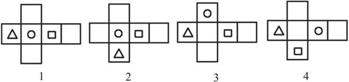
从正方体纸盒可以看出来，三角形和圆形在展开图中应该是相邻的，从而排除选项4，三角形和正方形在展开图中也应该是相邻的，从而排除选项1和选项3，只有选项2符合要求。
典型例题 4 把右边的正方体展开成一个平面图，下面的哪幅图是正确的展开图呢？
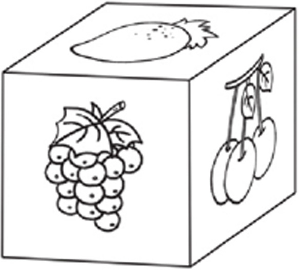
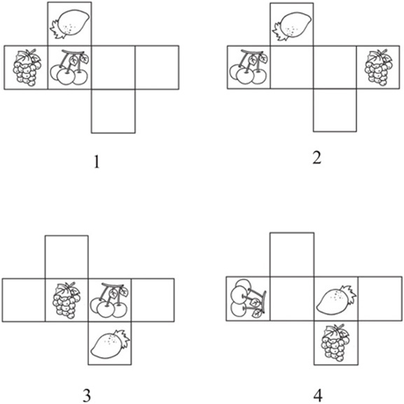
选项1的展开图中，草莓的方向不对；选项3的展开图中，樱桃与草莓的位置不对；选项4的展开图中，樱桃和草莓不相邻；只有选项2符合要求。
1.下面是一个立方体的展开图，把展开图折成立方体后，如果“我”字在前面，那么什么字在后面呢？
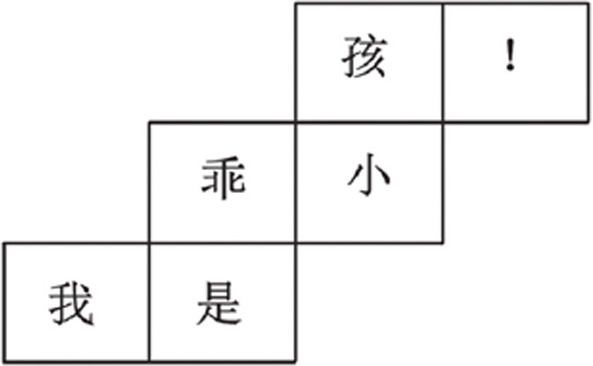
2.下面是一个立方体的展开图，把展开图折成立方体后，如果猴子在左面，那么什么动物在右面呢？
3.请把立方体和相应的展开图用线连起来。
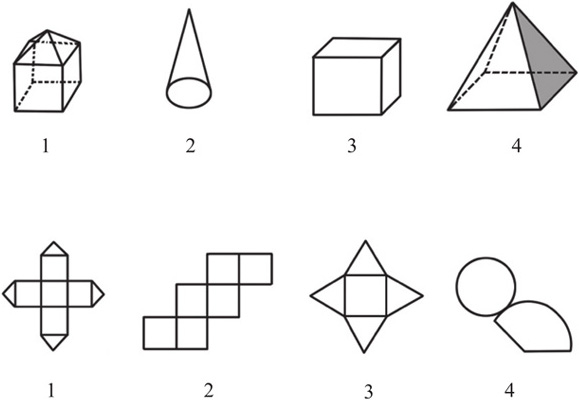
4.下面的哪个图形是由图例的展开图折叠成的？
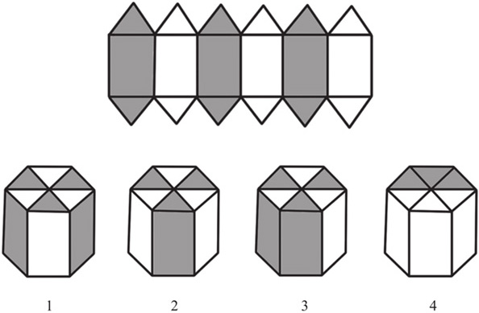
5.下面的4个图形中哪个是图例的正方体纸盒的展开图？
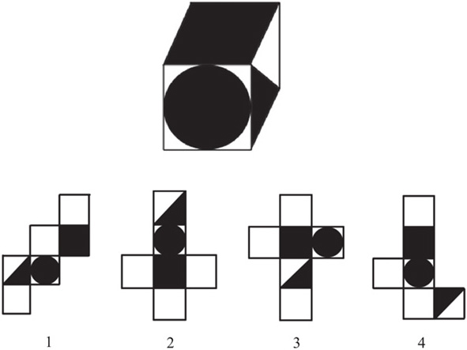
6.把图例的正方体展开成一个平面图，下面的哪幅图是正确的展开图呢？
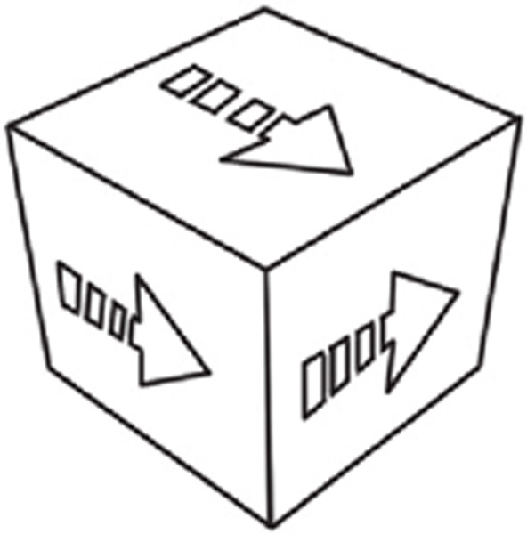
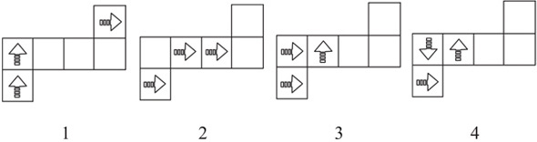
7.把图例的展开图折成一个立方体，折完后是下面哪个立方体呢？
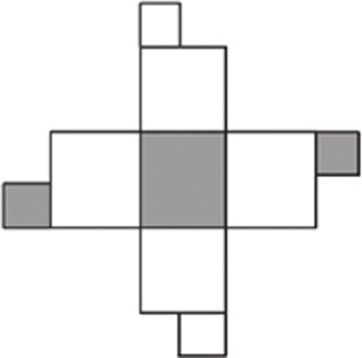
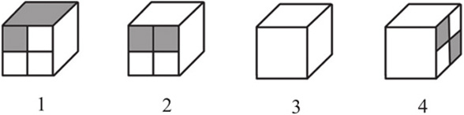
8.把图例的展开图折成一个立方体，折完后是下面哪个立方体呢？
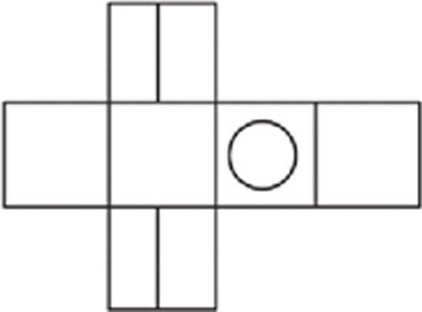
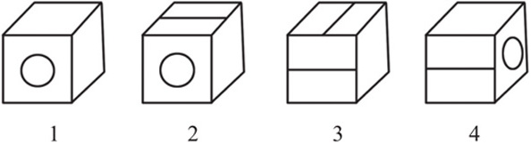
9.把图例的展开图折成一个立方体，折完后是下面哪个立方体呢？
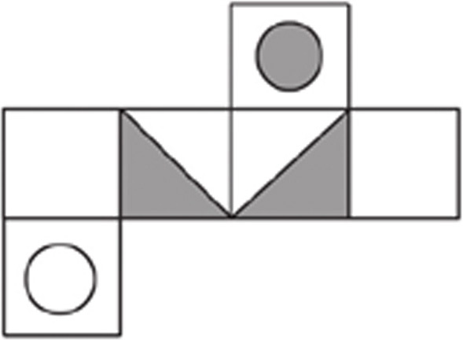
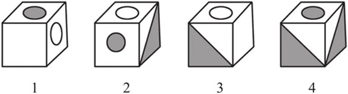